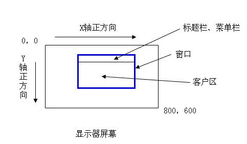

图 形
康林
一、坐标系
设备坐标：设备坐标是表示设备的坐标。我们常用的显示器的坐标就是设备坐标。它的左上角是原点（0，0），Y轴正方向向下，X轴正方向向右。例如：800×600：左上角为（0，0），右下角为（800，600）。在实际应用中它又可分为屏幕坐标（Screen）和客户坐标（Client）。
屏幕坐标：是屏幕上的坐标系。GetWindowRect
客户坐标：窗口中窗户区域的坐标系。GetClientRect
屏幕坐标与客户坐标的转换函数：ScreenToClient、ClinetToScreen

逻辑坐标：又可称用户坐标。它是用户自己定义的坐标。例如：我们数据中定义的坐标系就可以是逻辑坐标。它以（0，0）为原点，X轴正方向向右，Y轴正方向向上。
逻辑坐标与设备坐标的转换函数：LPToDP、DPToLP